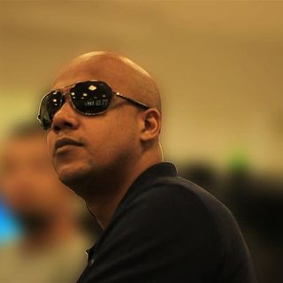

Multimídia
Sobre o Curso
O TÉCNICO EM MULTIMÍDIA é o profissional que elabora projetos de comunicação visual que funcionem como interfaces de interação do usuário com os meios eletrônicos e digitais. Pesquisa, organiza e prepara arquivos digitais para publicações on-line, animações 2D e 3D, games, websites, mídias sociais, web TV e TV Digital.
Planeja e desenvolve a produção de conteúdos audiovisuais por meio de processos criativos que se utilizam de tratamento de imagens estáticas e em movimento, redação de roteiros e manipulação de linguagem de programação, visando construir produtos que fomentem a navegação multiplataforma.
Utiliza aplicativos informatizados. Executa projetos em ciclos coletivos de produção utilizando competências de autogestão em trabalhos formais e/ou autônomos, de forma sustentável e empreendedora.
